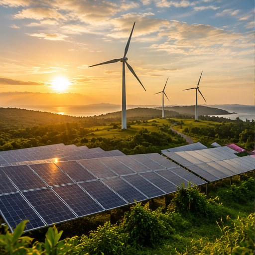

01
Energi terbarukan
Energi matahari, angin, dan air dapat menjadi alternatif sumber energi yang bergantung pada bahan bakar fosil. Peralihan menuju energi rendah emisi membantu mengurangi gas rumah kaca dari sektor energi.
Mitigasi perubahan iklim adalah upaya mengurangi emisi gas rumah kaca atau meningkatkan kemampuan alam menyerap karbon. Tujuannya membatasi pemanasan global dan mengurangi risiko perubahan iklim di masa depan.
Mitigasi berbeda dari adaptasi: mitigasi berfokus pada penyebab perubahan iklim, sedangkan adaptasi berfokus pada penyesuaian terhadap dampaknya.
Sumber: UNDP Climate Promise (2024); Biro Publikasi UMA (2024).
Tindakan individu penting, tetapi tidak menggantikan kebijakan publik dan perubahan pada sektor usaha.
Energi matahari, angin, dan air dapat menjadi alternatif sumber energi yang bergantung pada bahan bakar fosil. Peralihan menuju energi rendah emisi membantu mengurangi gas rumah kaca dari sektor energi.
Mengurangi listrik yang tidak diperlukan dan memilih peralatan hemat energi menekan kebutuhan energi. Jika listrik berasal dari bahan bakar fosil, penghematan dapat membantu mengurangi emisi.
Berjalan kaki, bersepeda, memakai transportasi umum, atau berbagi kendaraan dapat mengurangi emisi perjalanan, terutama jika menggantikan kendaraan pribadi.
Hutan menyimpan karbon dalam vegetasi dan tanah. Melindungi hutan dan memulihkan kawasan terdegradasi menjaga kemampuan alam menyerap karbon.
Kurangi sampah, pilah bahan yang dapat didaur ulang, buat kompos dari sampah organik, dan gunakan kembali barang layak agar lebih sedikit limbah berakhir di TPA.
Setiap barang membutuhkan bahan dan energi untuk produksi, distribusi, penggunaan, dan pembuangan. Memperbaiki barang serta membeli sesuai kebutuhan membantu mengurangi jejak dari pola konsumsi.
Mitigasi membutuhkan kerja bersama melalui kebijakan, proses produksi, dan kebiasaan sehari-hari.
Menghemat listrik, menggunakan transportasi umum, mengurangi sampah, dan memilih barang secara bijak.
Meningkatkan efisiensi energi, mengurangi emisi proses produksi, serta menerapkan pengelolaan limbah yang lebih baik.
Mendukung energi terbarukan, mengembangkan transportasi umum, membuat kebijakan pengurangan emisi, dan melindungi hutan.
Centang tindakan yang sudah dilakukan atau realistis kamu mulai minggu ini. Progres akan terhitung otomatis di halaman ini.
Pilih beberapa tindakan untuk melihat progres.
0 dari 6 selesai